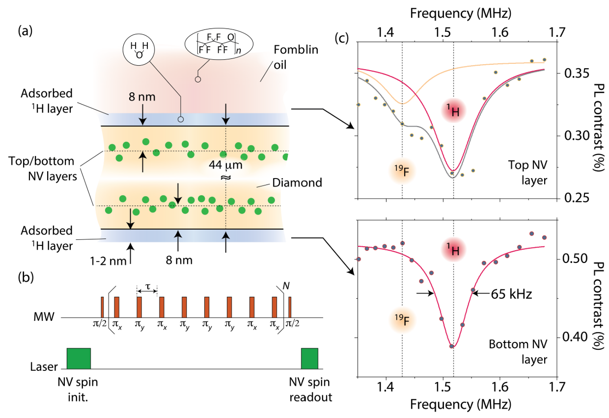

16. Nanoscale Color Center Sensing of Adsorbed Water in Contact With Oil

Kang Xu, Kapila Elkaduwe, Rohma Khan, Sang-Jun Lee, Dennis Nordlund, Gustavo E. Lopez, Abraham Wolcott, Daniela Pagliero, Nicolas Giovambattista, and Carlos A. Meriles [PDF]
Quantum sensing, 2026
Understanding the behavior of confined water at liquid-solid interfaces is central to numerous physical, chemical, and biological processes, yet remains experimentally challenging. Here, we utilize shallow nitrogen-vacancy (NV) centers in diamond to investigate the nanoscale dynamics of interfacial water confined between the diamond surface and an overlying fluorinated oil droplet. Using NV-based nuclear magnetic resonance protocols selectively sensitive to 1H and 19F, we independently track water and oil near the interface under ambient conditions. Comparing opposite sides of a doubly-implanted diamond membrane - one exposed to oil, the other not - we uncover a slow, multi-day process in which the interfacial water layer is gradually depleted. This desorption appears to be driven by sustained interactions with the fluorinated oil and is supported by molecular dynamics simulations and surface-sensitive X-ray spectroscopies. Our findings provide molecular-level insight into long-timescale hydration dynamics and underscore the power of NV-NMR for probing liquid-solid heterointerfaces with chemical specificity.